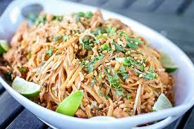

Odin Recipes

Healthy Chicken Pad Thai
Skip the takeout and make this Healthy Chicken Pad Thai recipe instead! This gluten free pad thai recipe is a healthier version of a classic takeout dish. Packed with veggies, chicken and brown rice noodles.
- Chicken breasts
- Peppers, bean sprouts, carrots
- Brown rice noodles
- Peanut butter
- Honey
- Lime juice/zest
- Rice wine vinegar
- Fish sauce
- Coconut aminos
- Peanuts
- Red pepper flakes
Instructions
- Cut chicken in 1/2 inch square pieces. In a large sauté pan, heat olive oil over medium-high heat. Add in cubed chicken to the pan and cook over medium high heat for 12-15 minutes until completely browned and cooked!
- While noodles/chicken are cooking, whisk together the sauce ingredients + set off to the side. Chop vegetables.
- Once chicken has cooked, remove chicken from the pan + set aside in a large bowl. Try to leave the oil in the pan.
- Add in peppers, carrots, garlic and onion to the oil and sauté uncovered for 10 minutes. After 10 minutes, stir in bean sprouts and cook for an additional 2 minutes.
- While the vegetables cook, bring a small pot of water to a boil + cook rice noodles according to the directions on the package.
- Push vegetables to one side of the pan + crack eggs into the pan. Scramble eggs until cooked, approximately 2 minutes.
- Stir veggie / egg mixture together. Remove from the pan and set aside with the chicken.
- Add the sauce mixture to the empty pan (you do not need to clean the pan!) and bring to a boil for 1 minute, stirring constantly. The sauce should bubble and slightly thicken.
- Add cooked veggies, cooked chicken and cooked noodles into the pan with the sauce and toss to combine.
- Garnish with peanuts. Optional garnish: lime, cilantro, green onions.